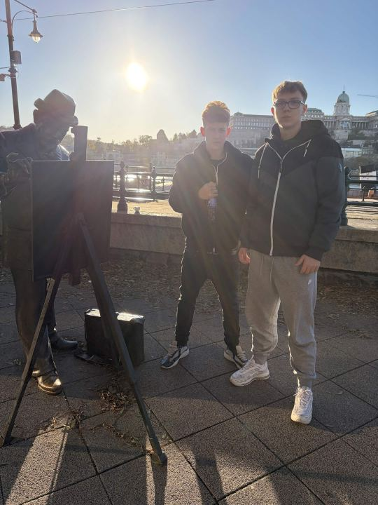
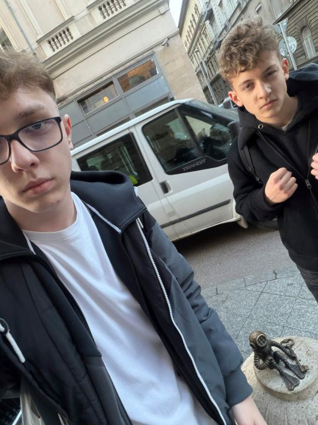
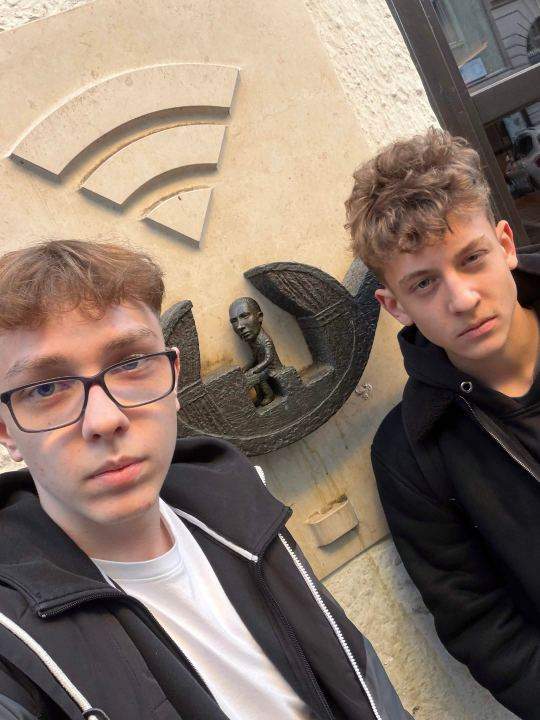
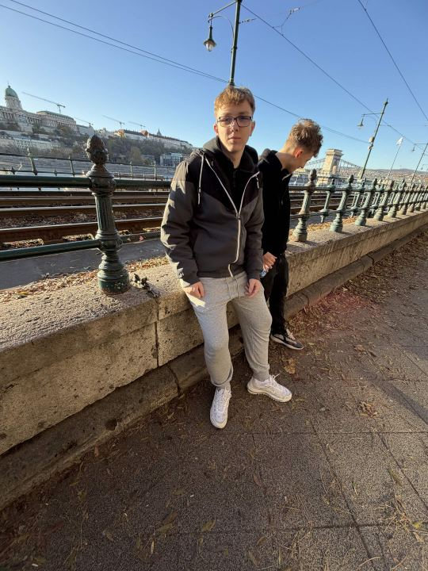
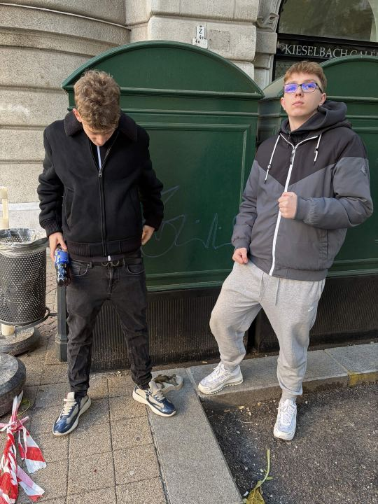
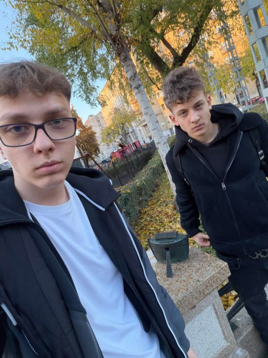
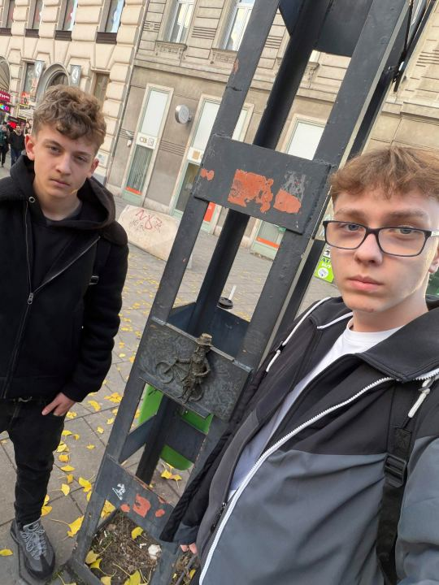

A szobrot Kolodko Mihály készítette. Életnagyságú alakot formáz, mégis megőrzi a miniszobrok emberközeli hangulatát. Az eredeti változatot 2012-ben állították fel Ungváron az Ung partján. A budapesti változat Roskovics születésének 160. évfordulójára készült, és 2014-ben került a Duna-korzóra. Ungváron a vászonra az Ung gyalogos hídja került, Budapesten a Lánchíd és a Duna.

Az Erzsébet körút és a Dohány utca sarkán, egy tűzcsap tetején áll a New York Kávéház szomszédságában. A legenda szerint a kávéház 1894-es megnyitásakor Molnár Ferenc a Dunába dobta a kulcsot, hogy a kávéház örökké nyitva maradjon. A búvár ezt a kulcsot keresi és őrzi.

A VII. kerületi Akácfa utcában, a Kispipa vendéglő falán látható. Első ránézésre dohányzópipának tűnik, de a formája egy zongoránál ülő alakot ad ki. A Szomorú vasárnap zeneszerzője előtt tiszteleg, aki éveken át ebben a vendéglőben zongorázott.

A Dunakorzón, a Vigadó tér közelében található. Egy lufiból hajtogatott kutya bronz mása, amint egy valódi csontot próbál megrágni. A mulandó lufihajtogatást örökíti meg tartós bronzban, és mosolyt csal az arcokra.

A Falk Miksa utca 21. alatt, egy elektromos szekrény tövében fekszik a Columbo-szobor közelében, kezében egy fegyverrel. A latin cím azt jelenti: a művészet örök, az élet rövid. Utalás Maurizio Cattelan kitömött mókusos installációjára.

A Bethlen Gábor téren, a volt Állatorvostudományi Egyetem közelében áll. Állatok nincsenek benne, de az egyetem közelsége sokat elárul. A bárka ablakai szivárványszínben vannak, ami az özönvíz utáni megbékélést és a reményt jelképezi.

A Károly körút és a Dohány utca sarkán, a nagy zsinagóga közelében, egy villanyoszlopra kapaszkodva látható. Kerékpárhoz támaszkodik, ami egy archív fotóra utal, amelyen a biciklijével szerepel. A környéken állt a szülőház, ahol Herzl 1860-ban született.